A safeguard inside UPI and bank apps. When someone pays a new or unusual payee during a call, Pehchaan asks "who asked you to pay?" and checks that claim through channels a cloned voice cannot reach: the relative's own registered phone, the bank's 1600-number call registry, a family safe word. Our Indian-language clone detector adds evidence, but never decides alone.
On a call + new payee + ≥₹10k. Metadata only, no audio.
"Who asked you to pay?" Family · Bank · Police · Other
A check a clone can't pass, then GO PAUSE HOLD
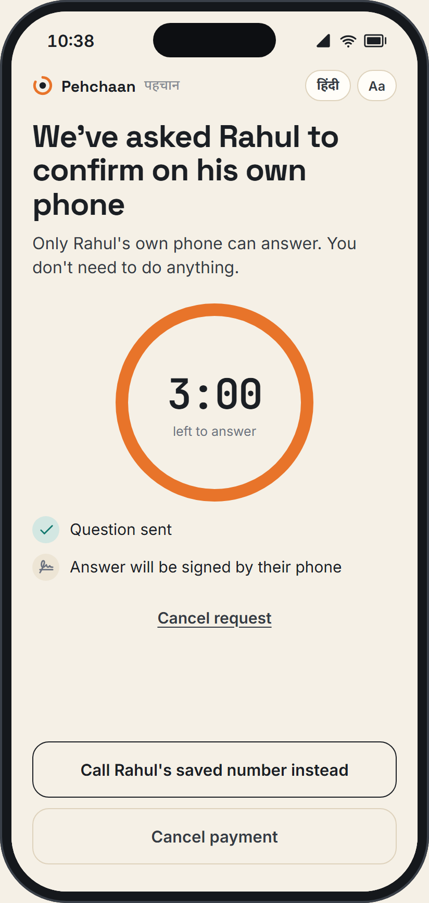
"Papa, accident ho gaya… Mummy ko mat batana, abhi ₹50,000 bhejo."
A cloned son's voice, made from 30 s of social-media clips
"Is it really Rahul?" Ask him on his phone. A clone can't answer from there.
What would have stopped it at 22:47: one question, "who asked you to pay?", then a push to Rahul's own phone. A clone can't tap "Yes, it's me" from London.
The UPI payer at the moment of paying, especially parents and elders (45+) who use UPI daily but trust a familiar voice.
The fraud-risk team at a bank or UPI app (TPAP), which ships Pehchaan in-app.
The claimed relative · bank fraud analysts · I4C/1930 · DoT (Chakshu, FRI)
India doesn't count voice-clone losses separately; these are the closest official numbers. 1 in 5 Indians say they've met a voice-clone scam (survey).3
T1 Cloned relative from an unknown, overseas or WhatsApp number
T2 Fake bank official, often an AI voice agent working at scale
T3 Digital arrest: fake police plus a cloned relative on the same call
All three end in an authorised push payment, made with the victim's own credentials.
One moment: a payment to a new or unusual payee made during, or ≤10 min after, a call (≤60 min from ₹50,000). Every other payment is left untouched.
Our test set: 7,809 genuine / 11,265 cloned clips, 13 generators (6 never seen in training), 5 phone channels, one global threshold. Open-source detectors lose ~48% AUC on real 2024 deepfakes7; real-time voice conversion adds only ~0.4 s19, so clones hold live conversations.
A clone can copy a voice. It cannot answer from your son's phone, call from your bank's 1600 number, or know your family's safe word.
So Pehchaan verifies the identity claim, and treats voice forensics as one capped signal.
| Defence | Gap at the moment of payment |
|---|---|
| OTP / UPI PIN (2FA) | The victim enters it herself; this is an authorised push payment. |
| Voice biometrics | Clones defeat voiceprints. AWS retired Amazon Connect Voice ID on 20 May 202610; OpenAI urged banks to phase out voice authentication11. |
| Truecaller AI Call Scanner | Available only in the US (Oct 2026)12. |
| Google on-device Scam Detection | In India only on Pixel 9+, under 1% of phones13. |
| DoT FRI · RBI MuleHunter.ai · I4C registry | They score numbers and accounts. They can't check who the caller claims to be, and a fresh mule or SIM starts clean15,17. |
| Enterprise detectors (Pindrop, Reality Defender…) | They protect bank call centres, not the customer's own call with a fraudster. |
| Awareness ("police never call", "never share OTP") | A familiar voice in a panic overrides advice. Nothing in the payment flow pauses the user at 22:47. |
| RBI's proposed blanket controls | A 1-hour lag on every transfer above ₹10k, and trusted-person approval above ₹50k for people 70+6. That protects everyone and slows everyone, because nothing decides which payment is risky. Pehchaan can be that decision engine. |
Each claim goes to the check that defeats it: family → the relative's own device, bank → the bank's live 1600 call registry, police → "there is no digital arrest". The clone detector is one capped signal.
RBI proposes a 1-hour lag on transfers above ₹10k and trusted-person approval above ₹50k for people 70+6. Pehchaan applies them only where risk is real: in our simulation just 0.21% of genuine triggered payments are held, while 73% of scams are.
Fine-tuned on consented clones of our own voices in Telugu, Hindi and English: 4.8% EER vs 34% off-the-shelf, 6.0% on generators it never saw. When a real call fooled it, we put it in shadow mode instead of letting it judge.
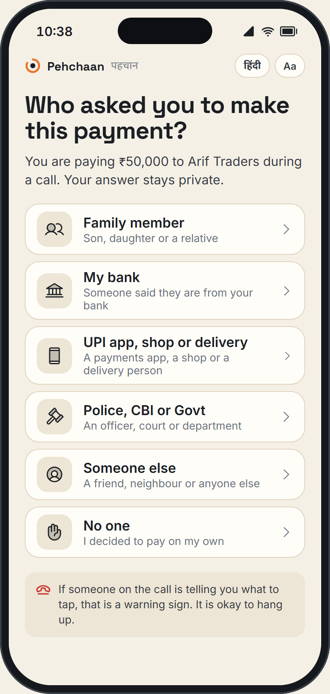
1 · Pause & askOn a call with an unknown +44 number, paying ₹50,000 to a new payee: one question.
2 · Family claimRahul is asked automatically on his own phone; callback and safe word as fallbacks.
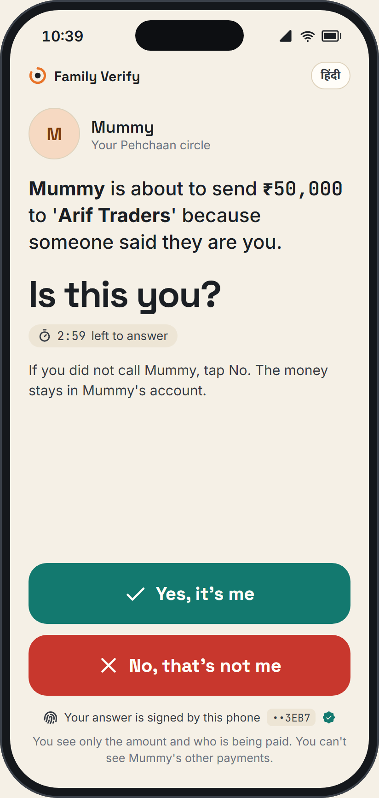
3 · Relative's phone"Is this you?" Signed by a device-bound key. One tap.
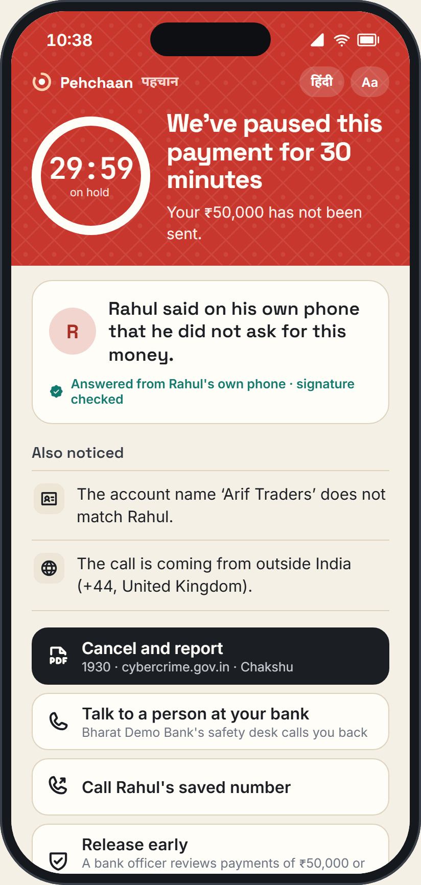
4 · Cooling-off holdNothing is sent. Release via verification or a bank analyst.
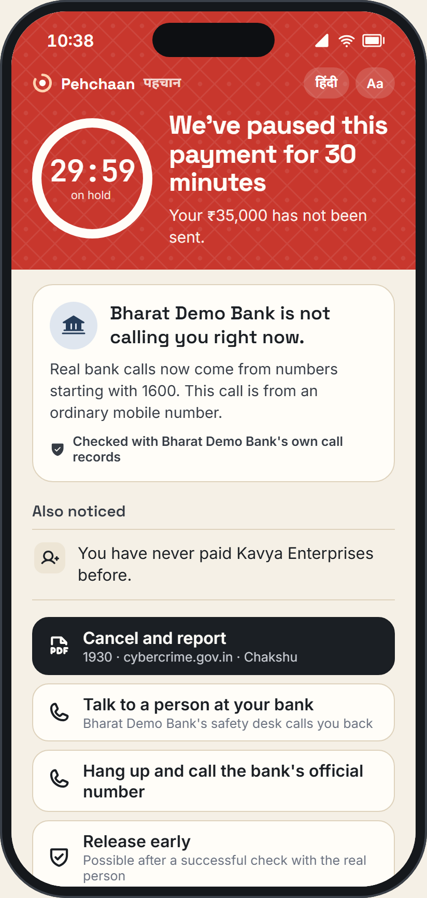
5 · Bank claim"Bharat Demo Bank is not calling you right now." 1600 + call registry.
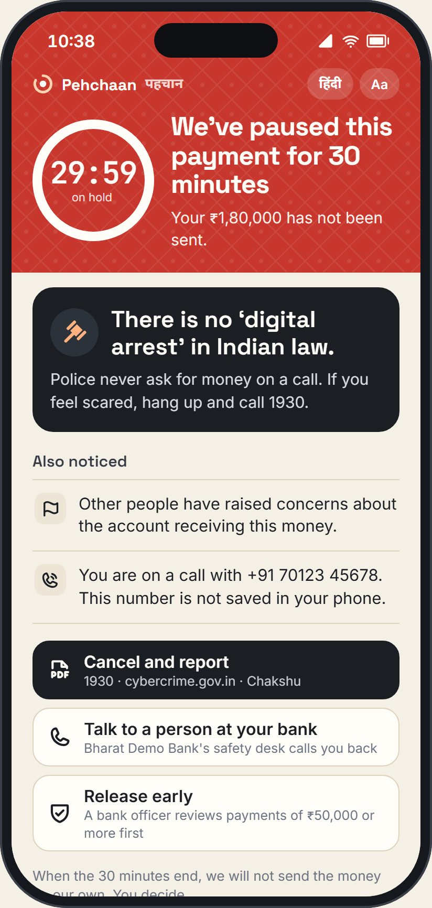
6 · Police claim"There is no 'digital arrest' in Indian law." Cooling-off.
"What we noticed", never "this is a scam" or a raw score
Every screen offers a check, a human, or "continue"
"If someone on the call is telling you what to tap, hang up"
Hindi/English, large text, 5-second minimum before "continue"
Result: HOLD via G7: Rahul's own phone said "not me". The V row adds nothing today: on real calls a cloner none of our models had seen got past them 12 times out of 12, so voice is in shadow mode. Even once calibrated (+2.08 → 92%), strict G2 keeps it at PAUSE. A clone score can never hold anyone's money.
Genuine twin: the real Rahul calls from his saved UK number about his own new account → 34% PAUSE → Family Verify is sent automatically → he taps "Yes, it's me" → 1% GO (G4).
Each bar is ln(likelihood ratio) after family caps, exactly as the analyst console shows it. Measured voice ratios: 57–70× on simulated channels, but 0.93× (no information) on a real call, hence shadow mode. The others are documented assumptions, recalibrated in shadow mode.
GO p < 15% · PAUSE 15–75% · HOLD ≥ 75% and G1, or G7
Thresholds tuned to an alert budget: ≤0.25% of genuine triggered payments held, ≤6% paused.
No single weak signal. HOLD needs ≥2 families each ≥3×, not counting what fired the trigger (new payee, amount) or voice.
Voice only raises suspicion, never creates a HOLD, never reassures. Today it runs in shadow mode until it passes a real-call gate.
Quality gate. <4 s speech or SNR <10 dB → inconclusive, never "real".
Decisive yes. Relative's phone, or the bank's 1600 registry, confirms → GO.
Trusted payees (paid ≥3×, usual amount) are never interrupted.
No accusation. Copy says what we noticed and what to check, in Hindi or English.
Decisive no. Relative's signed "not me" or the bank's "we're not calling" → HOLD, always. Self-reported checks stay advisory.
Public data: FLEURS genuine speech and IndicSynth spoofs, within licence (A7). No one cloned without signed consent.
| A1 "Who asked?" answered truthfully | 5-elder test at the finale; checklist for coached "no one" |
| A2 Relatives reply within 3 min | Pilot metric; callback / safe-word fallback |
| A3 Bank can say "we're calling you" | Dialer / Amazon Connect API; mocked now |
| A4 FRI and registry lookups available | 1,600+ orgs already on DoT DIP15 |
| A5 LRs transfer to the field | Shadow mode recalibrates every LR first |
| Detector | All | Unseen generators |
|---|---|---|
| XLS-R + AASIST, off-the-shelf | 34.3% | 32.6% |
| NII MMS-300M, best public (NC) | 15.1% | 13.9% |
| Ours v1, fine-tuned (Round 1) | 4.8% | 6.0% |
| Model | EER | Clones caught | Genuine flagged |
|---|---|---|---|
| Samsung (D1) · test split, 236 clips from 41 calls | |||
| v1 (Round 1) | 24.6% | 48% | 3% |
| A: retrained on real calls | 6.8% | 75% | 0% |
| Redmi (D2) · never used in training · 274 clips from 32 calls | |||
| v1 (Round 1) | 28.8% | 39% | 12% |
| A: retrained on real calls | 11.7% | 84.6% | 8% |
A new cloner got through: 0 of 12 caught. Clones from Sarvam's instant voice cloning, which no model was trained on, passed as genuine on real calls for both v1 and A. So voice stays in shadow mode: logged for analysts, never used in a decision, until it passes the real-call gate (≤5% false flags on ≥50 live calls; not yet run).
| Input | Why | Consent · retention |
|---|---|---|
| Call state, caller number | Trigger, context | App permission · number hashed at rest, 90 days |
| Contacts | "Known caller?" | Matched on-device by hash; never uploaded |
| Payment fields | Payment context | Already held by the bank/PSP |
| 8–12 s voice clip | Voice check | Opt-in per call; discarded after scoring unless saved as evidence |
Never collected: call recordings by default · SMS/WhatsApp content · location history · the user's voiceprint · contact lists.
| Coaches victim: "tap No one" | Context still scores; screen says "if someone is telling you what to tap, stop" |
| Hang up, then pay | 10-minute post-call window |
| New voice generator | Voice capped; O-checks decisive; monthly red-team refresh; held-out eval |
| Codec laundering / noise | Channel augmentation in training; quality gate → inconclusive |
| Spoofed "Yes, it's me" | Device-bound key + signed challenge; new devices wait 72 h before they count |
| M0–2 Shadow | Score every triggered payment silently; measure trigger rate and recalibrate LRs on labelled NCRP/fraud-desk outcomes. No user sees anything. |
| M2–4 Seniors pilot | PAUSE screens only, for opted-in users 60+ and their family circles; comprehension and drop-off metrics. |
| M4–8 HOLD + desk | Cooling-off holds with the analyst queue; SLA: callback in ≤15 min for holds ≥₹50k. |
| M8+ Scale | All users; multi-bank via a shared SDK; phase 2: contact-centre module on Amazon Connect, replacing retired voiceprint checks. |
Only payments made during or just after a call to a new or unusual payee are assessed. The rest of India's 24 bn monthly UPI transactions18 never touch Pehchaan.
Native Android shell around the tested screens: the phone's real call state and an on-device contact check drive the risk check. No scenario buttons.
Family Verify as a real notification on the relative's phone, even with the screen locked.
upi:// links and QR codes open Pehchaan first, which checks, then hands over to the user's own UPI app. In front of any UPI app, no change to NPCI rails.
"Are we calling you?" registry endpoint for the genuine-bank path; Amazon Connect outbound as the production route.
Live genuine calls from consented volunteers towards the ≥50-call gate, reported however it lands.
Backup video, rehearsal ×3, the web demo as the fallback at every step.
① A cloned voice calls the payer's phone: "accident, send ₹50,000" → ② she taps Pay → "Who asked?" → Rahul → ③ Rahul's own phone lights up → "No, that's not me" → HOLD → ④ console + signed report. Then the real Rahul taps "Yes, it's me" → paid.
Venue Wi-Fi → phone hotspot · app build slips → the tested web demo · a new cloner fools the detector → the person-checks still HOLD (Sarvam 0/12 is why).
Real son, detector false alarm → paid: the detector can't hold money either way.
₹40,000 paid 30 minutes after the call (outside the 10-minute window). New payees with no call at all: by design, no call means no Pehchaan.
Paying from an app without Pehchaan · screen-share or remote-control apps · the real son coached or in on it · a scammer joining the family circle before the attack. Each has a stated next step.
Ask whenever the caller is a family-circle member's saved number · Family Verify even when the score is Green · "shop / UPI app" answers get the refund-script questions · no re-binding a phone while a question waits · split payments add up · longer window for large amounts.
| Your case | Judges set the caller, call state, amount, payee and registry flags; the case runs live on the two phones and the console |
| Detector bench | Drop or record any audio, any format: every detector side by side, a fused verdict, named failure cases, CSV |
| Clone vs detect | ClonEval-style benchmark: how convincing each cloner is against how often each detector catches it; plus a paid-API retrain that didn't beat A on real calls (appendix A3 · 6/6) |
| Red team | 15 attacks scripted through the live API; the holes it found became rules v0.3 (slide 11) |
| Analyst | Voice hits go to a review queue, never to the payer's decision; privacy shown from each case's own records; seconds to outcome |
| Live clone | Consent → record → clone → call → delete on screen, for a consenting volunteer |
| Android app | In progress (Vamsi): native shell with real call state, an on-device contact check and Family Verify as a notification |
| Promised | Status |
|---|---|
| Live attack call, consented clone | Done: Vobiz call to a real phone, HOLD 14 s after Pay. Cut: the live voice agent and streaming speech cues (a tap checklist instead) |
| Family Verify on a 2nd real phone | Done on the web; as an app notification on site |
| 100+ consented real calls, retrain | 73 calls (41 + 32 on a held-out handset). Retrain: 24.6% → 6.8% EER; Sarvam cloning 0/12 caught, reported |
| Bank "are we calling you?" | Mocked registry with its integration contract. Cut: Amazon Connect |
| Android shell, real call state | On site |
| Comprehension test, 5 people | On site |
| Backup video, rehearsals | 25 Oct morning |
| Rules | Trigger, trusted-payee bypass, G1–G6 (versioned YAML, unit-tested) |
| Models | Voice: XLS-R-300M + AASIST fine-tuned on our corpus, temperature-calibrated · Cues: ASR + Bedrock (structured labels) · Fusion: log-odds, LRs recalibrated in shadow |
| Storage | Cases: DynamoDB (90 d) · evidence: S3 Object Lock + KMS (case life) · metrics: CloudWatch |
| Interfaces | /risk/assess · /voice/score · /verify/family · /cases · WebSocket per case |
| Outputs | Tier + reasons[] (EN/HI) · actions[] · guardrails[] · signed evidence pack |
Case ID · IST timestamps · masked payer · payee VPA + bank · amount · caller number + series · claim · all reasons with contributions · voice score + model version + quality · transcript snippet (only with consent) · SHA-256 event chain · Ed25519 signature.
| Input | Source | Consent / authority | Provenance kept |
|---|---|---|---|
| Call state, number | OS telephony / audio mode | App permission, explained at onboarding | hash + series class |
| Payment fields | Bank/PSP core | Existing banking T&C | txn ref |
| FRI tier, registry hit | DoT DIP, I4C via the bank | Bank's existing integration | lookup time + source |
| Claim, verify answers | User, relative's device | Pehchaan circle opt-in | signed events |
| Voice clip, transcript | Speakerphone, opt-in | Per-call tap; deleted unless saved | model version + hash |
| Training audio | Team recordings + clones; public CC sets | Signed consent; licences in appendix | data card per clip |
| Forged API calls / replay | mTLS, device attestation (Play Integrity / App Attest), nonce + idempotent case IDs |
| Spoofed relative reply | Device-bound Ed25519 key; enrolment needs both phones; 72-h wait for new devices |
| Insider reads evidence | RBAC + case-scoped access, reason logged, KMS key policy, quarterly access review |
| Adversarial audio / new TTS | Channel + RawBoost augmentation, ensemble, capped LR, monthly red-team corpus, held-out reporting |
| Probing the thresholds | Server-side scoring only; coarse reasons; rate-limits per payee and device |
| Prompt injection via transcript | LLM sees text as data, returns enum labels only; Guardrails; no tool access |
| Path | Budget | Measured (prototype) |
|---|---|---|
| Risk assess at Pay tap | <300 ms p95 | 3.9 ms p95 (in-process; network excluded) |
| Voice score (10 s clip) | <1.5 s | 0.34 s GPU · 0.98 s CPU (int8), end-to-end · 3.1 s on the 2-vCPU demo server (shadow only) |
| Family Verify round trip | <3 min, async | human response time; measured in pilot (A2) |
| Triggered share of UPI txns | assumed <1% | validate in shadow mode |
Scale: stateless API on Fargate auto-scaling; GPU voice endpoint only for opt-in checks; per-region deployment for RBI payment-data localisation.
Alert-rate SLO per 10k triggered payments · FP appeals rate · detector score drift by language and channel · Family Verify response time · Langfuse traces for every LLM call · monthly model card update.
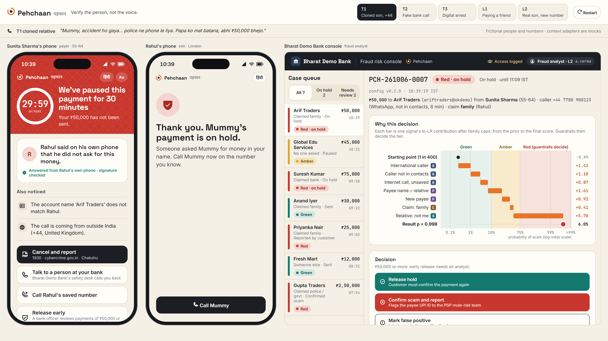
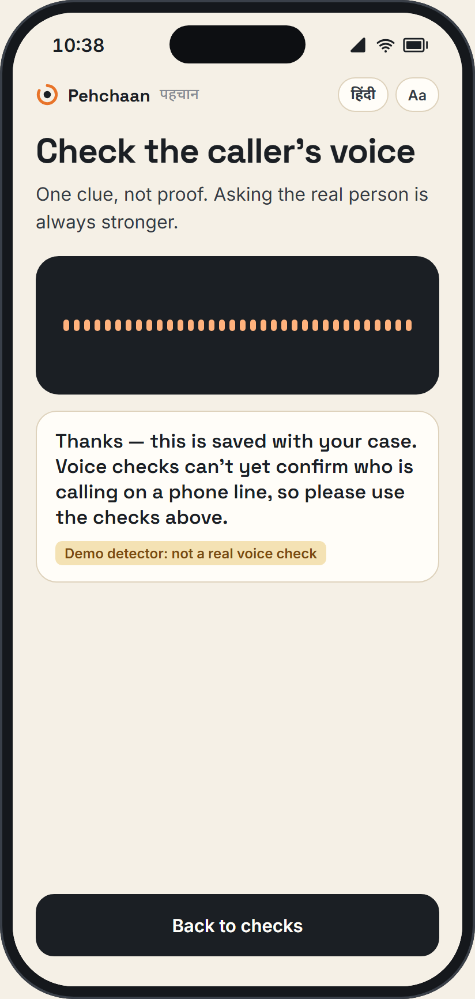
Voice check, shadow modeNo meter, no verdict: "saved with your case; use the checks above".
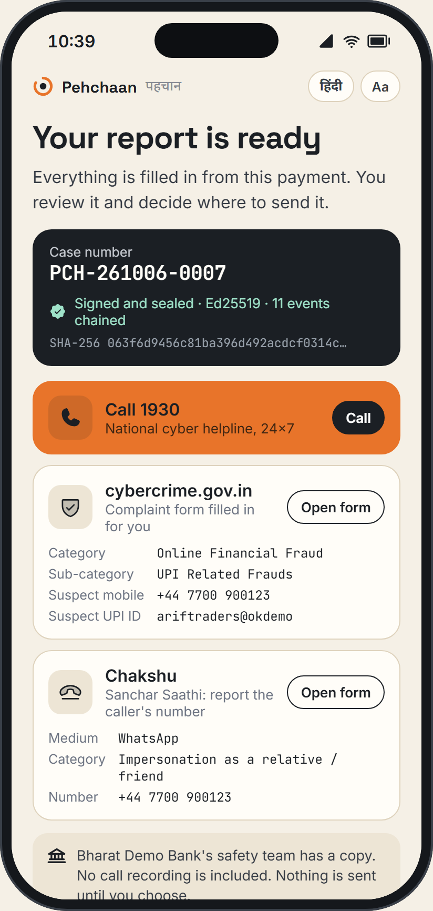
Report packSigned evidence; pre-filled for 1930 / NCRP and Chakshu. The user submits.
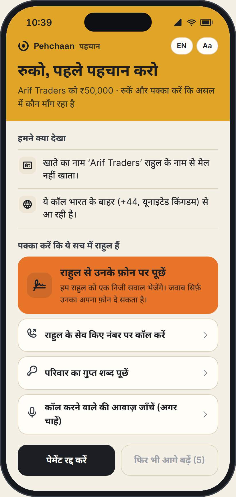
Hindi PAUSEEvery screen in Hindi or English, with a large-text mode.
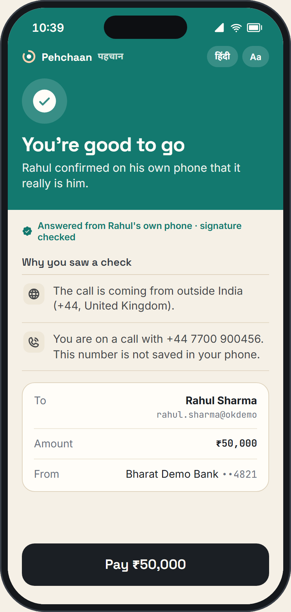
Genuine pathThe real son confirms from his own phone → GO.
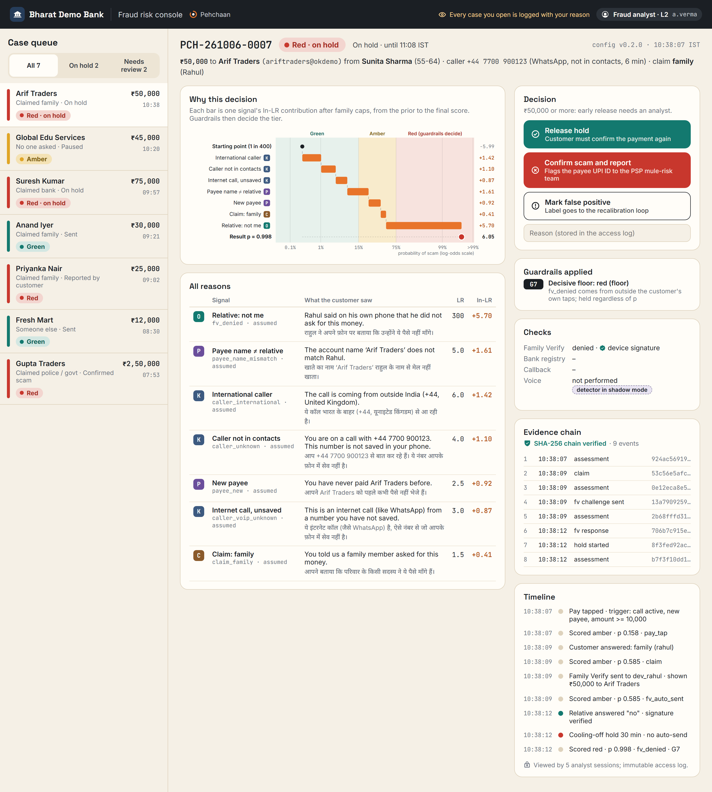
Analyst consoleEvery reason with its contribution, guardrails applied, and release / confirm / false-positive actions; access is logged.
| Test slice | likely synth. | inconcl. | no strong ev. |
|---|---|---|---|
| All test | 60× | 2.6× | 0.06× |
| Held-out generators | 57× | 3.5× | 0.09× |
| Phone channels + held-out | 70× | 2.9× | 0.09× |
| Real call vs held-out clones | 0.93× | 1.4× | 1.6× |
Engine policy: floor at 1× (never reassures), cap at 8×, strict G2, and shadow mode until real-call false flags are ≤5% on ≥50 consented calls.
Detected in 100% of clean, PSTN and Opus clips, 88% replay, but only 30% after AMR-NB; false hits 0–0.7% (6.7% on replay). A positive-only bonus signal, never proof of "real".
| Model | Real-call EER | S02 EER | AUC | Clones caught | Genuine flagged | Sim EER |
|---|---|---|---|---|---|---|
| v1 (Round 1) | 24.6% | 21.7% | 0.844 | 48% | 3% | 4.8% |
| B: + real-call clips | 9.3% | 9.8% | 0.963 | 69% | 0% | 5.7% |
| C: + learned channel | 18.6% | 18.5% | 0.907 | 67% | 6% | 5.7% |
| A: both | 6.8% | 8.7% | 0.988 | 75% | 0% | 6.1% |
| Session (IST) | Answered | Clips | EER | Genuine flagged |
|---|---|---|---|---|
| 19 Oct | by hand | 41 | 19.5% | 7/20 |
| 20 Oct | by hand, room got louder | 34 | 17.7% | 2/18 |
| 23 Oct | unattended over adb | 199 | 10.1% | 2/100 |
| All (pre-registered) | 274 | 11.7% | 11/138 = 8% (5–14%) |
Clones caught 115/136 = 84.6%. v1 on the same clips: 28.8% EER, 53/136 caught, 16/138 genuine flagged.
0/12 caught by v1 and by A on real calls (95% CI 0–24%); every score sat far on the "genuine" side.
Retraining on real calls helps and mostly carries to a new phone. How the call is captured matters as much as the model. A new cloner beats it: voice stays a clue, never the judge.
| Cloner | Similarity | Ours A | NII | Off-shelf |
|---|---|---|---|---|
| Sarvam IVC* | 0.943 | 0/71 | 71/71 | 23/71 |
| Chatterbox* | 0.932 | 45/50 | 50/50 | 18/50 |
| Seed-VC* | 0.890 | 69/110 | 110/110 | 106/110 |
| XTTS-v2 | 0.845 | 49/50 | 50/50 | 45/50 |
| All 7 cloners | – | 226/357 | 354/357 | 217/357 |
| Real voices flagged | 0.936 | 40/124 | 41/124 | 85/124 |
* never trained on. Similarity = ClonEval's WavLM speaker similarity to the real speaker. On real calls A flags 13/256 real voices; NII catches Sarvam 11/12 but flags 146/256.
| Model | Fixed dev EER | New engines caught | D2 real-call EER | D2 caught | D2 real flagged |
|---|---|---|---|---|---|
| A (served) | 2.86 % | 91.1 % | 11.7 % | 115/136 | 11/138 |
| A2 | 2.29 % | 95.9 % | 13.9 % | 110/136 | 10/138 |
| A2-ivc | 2.04 % | 96.3 % | 13.1 % | 120/136 | 18/138 |
D2 = the held-out handset, 274 real-call clips. New engines = Sarvam v3 and v4 Flash, OpenAI and Deepgram voices never in training (synthetic audio, 5 channels); the engines were held out for A but trained on for A2 and A2-ivc. A2-ivc also trained on Sarvam clones of S01: on real calls it caught S01's 5/5 (seen speaker) and S02's 0/7 (unseen speaker). Differences on D2 sit inside the 95 % intervals.
₹ protected per ₹1 of genuine money delayed: 1.19 → 2.98. Main drivers: G7 (the relative's signed "not me" is decisive), user-reported checks made advisory, a bank registry miss for a bank that isn't integrated treated as "unknown", and the bank vs UPI/shop claim split.
| Budget | Target | v0.1 | v0.2 final |
|---|---|---|---|
| Genuine payments paused | ≤ 6% | 10.1% | 5.6% |
| Genuine payments held | ≤ 0.25% | 0.92% | 0.21% |
| Scams paused / held | maximise | 96% / 77% | 95% / 73% |
We traded about 4 points of scam holds for 4× fewer wrongful holds. Every remaining hold has a human release path.
All values start as documented team assumptions, each with a one-line rationale in the config, and are recalibrated in shadow mode before any user sees a screen. Voice LRs are replaced by the detector's measured calibrated band rates and floored at 1× (never reassuring). Watermark hits are capped by the V family cap.
[1] PIB / Department of Telecommunications, Rajya Sabha reply on Chakshu report categories, 5 Feb 2026. pib.gov.in/PressReleasePage.aspx?PRID=2223779
[2] McAfee, "Beware the Artificial Impostor" (India data, survey of 13–19 Apr 2023, n=7,054 across 7 countries), May 2023.
[3] McAfee India, "State of the Scamiverse" press release, 5 Feb 2026 (survey Nov 2025, n=7,592).
[4] ThePrint, "Cybercrime saw 24% spike in 2025…", quoting MHA data and a Lok Sabha reply, 21 Feb 2026.
[5] PIB / MHA, Rajya Sabha reply on NCRP and CFCFRMS (FY24–FY26: ₹56,087 cr reported, ₹206 cr refunded), 22 Jul 2026. PRID=2287674
[6] RBI Discussion Paper, "Exploring safeguards in digital payments to curb frauds", 9 Apr 2026. rbi.org.in/Scripts/PublicationsView.aspx?id=23810
[7] Chandra et al., "Deepfake-Eval-2024", arXiv:2503.02857, Mar 2025.
[8] NII Yamagishi Lab, AntiDeepfake MMS-300M model card and arXiv:2506.21090, Jun 2025.
[9] Wang et al., "ASVspoof 5", arXiv:2408.08739, Aug 2024.
[10] AWS documentation, "Amazon Connect Voice ID end of support" (20 May 2026).
[11] OpenAI, "Navigating the challenges and opportunities of synthetic voices", 29 Mar 2024.
[12] Truecaller, AI Call Scanner product page ("currently only available in the U.S. on Android"), checked Oct 2026.
[13] TechCrunch, "Google steps up AI scam protection in India, but gaps remain", 20 Nov 2025.
[14] TRAI Direction on the 1600 series for BFSI service/transactional calls, 19 Nov 2025 (PIB PRID=2191647).
[15] PIB, DoT Financial Fraud Risk Indicator launch, 21 May 2025 (PRID=2130249); ET Government, "₹5,043 crore saved…", 10 Sep 2026.
[16] RBI, (Digital Payment Transactions – Authentication Mechanisms) Directions 2025, RBI/2025-26/79, 25 Sep 2025.
[17] RBI Annual Report 2025-26, Ch. VI (MuleHunter.ai live in 26 banks as of 31 Mar 2026).
[18] NPCI, UPI product statistics (Sep 2026: 24,068 mn transactions), accessed 5 Oct 2026.
[19] Plachtaa, Seed-VC README (real-time voice conversion latency ≈300 ms algorithmic + ≈100 ms device).
[20] Indian Express, "The safe side: AI voice cloning scams", 23 May 2025; The Hindu, "Homemaker duped of ₹1.97 lakh in AI voice scam", 18 Mar 2025; Straits Times (citing Indian Express), 12 Feb 2024.
[21] Mittal et al., "PITCH: AI-assisted tagging of deepfake audio calls using challenge-response", arXiv:2402.18085.
[22] CERT-In advisory CIAD-2024-0060, "Deepfakes – threats and countermeasures", 27 Nov 2024.
[23] Times of India, interview with Amazon India's trust and safety lead, 4 Aug 2026 ("Behaviour is much harder to fake than documents or images").
[24] Digital Personal Data Protection Act, 2023 (Government of India).
Detection: SSL_Anti-spoofing XLS-R-300M + AASIST (code MIT; checkpoint licence unstated), fine-tuned by us · wav2vec2-XLS-R (Apache-2.0) · baseline NII MMS-300M AntiDeepfake (CC-BY-NC-SA-4.0, evaluation only) · resemble-perth watermark (MIT) · silero-vad, faster-whisper (MIT).
Voice generation (attack corpus): F5-TTS (weights CC-BY-NC) · F5-Hindi, IIT Madras (CC-BY-4.0) · XTTS-v2 (CPML, NC) · Chatterbox (MIT) · CosyVoice2 (Apache-2.0) · Seed-VC (GPL-3.0) · MMS-TTS (CC-BY-NC) · Kokoro (Apache-2.0) · Indic Parler-TTS (Apache-2.0) · stock voices from Sarvam Bulbul, OpenAI TTS, Deepgram Aura (their API terms). Channel simulation: ffmpeg, libopus, opencore-amrnb, sox, pyroomacoustics.
Speech services: Sarvam AI (stock voices, and instant voice cloning of the two consenting team members only); OpenAI and Deepgram (stock voices only). No ASR or LLM service is used in the product today. Telephony: Vobiz (outbound test and demo calls). Compute: AWS EC2 g5.2xlarge (A10G) for training, about $15–20 in Round 1; one c7i.large in ap-south-1 hosts the live demo.
Prototype and deck tooling: FastAPI, React, Vite (MIT) · tweetnacl (Unlicense) · Docker · Caddy (Apache-2.0) with Let's Encrypt certificates · Cloudflare DNS and tunnel · Android platform-tools/adb (Apache-2.0) · Playwright (Apache-2.0) · rough.js, rough-notation (MIT) · matplotlib (PSF) · Phosphor Icons (MIT).
Fonts: Inter, Space Grotesk, JetBrains Mono, Noto Sans Devanagari (all SIL OFL 1.1).
Research: web sources gathered with Firecrawl; every figure is cited to its original publisher in A6.
Brands: the prototype uses a fictional "DemoPay / Bharat Demo Bank"; Amazon, AWS and other names are referenced descriptively; no endorsement implied.